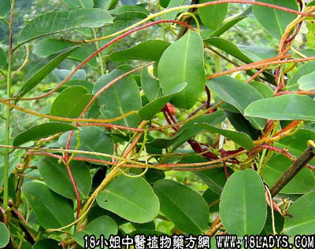

别名：追风棍。
植物名：白桐树。
生长环境：本品为大灌木，荒郊、山岗、路旁野生。
分布：印度至我国南部及马来西亚，广州附近偶尔有见之。
入药部分：根。
采集期：全年。
自采地点：郊外、荒地。
性味：性平、味甘淡（一说有毒）。
功能：祛风、去湿、消肿、散瘀。
主治、用量和用法：1、百子痰，配伍用；2、风湿水肿，配伍用；3、浮肿：干根2两，水蚧1只，清水煎服；4、四肢软痛，配伍用；5、跌打瘀肿，配伍用。
验方1：（治脚肿方）丢了棒根1两、臭屎茉莉根5钱、豆豉羌5钱、清水三碗，煎成一碗服。
（方解）对方丢了棒、豆豉羌祛风去湿，臭屎茉莉根入下焦利水去湿，合为治风湿脚肿有效药剂。
（方歌）丢了棒根医肿症，豆豉羌祛风去湿胜，臭茉莉头入下焦，风湿脚肿治必应。
验方2：（治四肢软痛方）丢了棒根1两、千斤拔1两、枫荷寄生1两、鸡脚5对、清水四碗，煎成一碗服。
（方解）丢了棒，枫香寄生祛风去湿，千斤拔舒筋活络，强腰足，加鸡脚补脚之虚，攻补同施，是扶正祛邪之法。
（方歌）四肢软痛痛难消，丢了千斤鸡脚翘，枫香寄生清水煎，攻补兼施固肾腰。
验方3：（治跌打瘀肿方）丢了棒根1两、九层塔1两、入地金牛根1两、透骨消1两、将上药用酒湿匀蒸透，用白酒1斤半，浸半月，内服外搽并用。
（方解）本方四味，俱为散瘀药。丢了棒、九层塔并能祛风活血、入地金牛兼能化气，透骨消入骨通络散瘀、合为化气、活血、消肿之剂。
（方歌）跌打瘀肿丢棒根，九层塔入地牛根，透骨消同白酒浸，搽服兼施瘀自行。